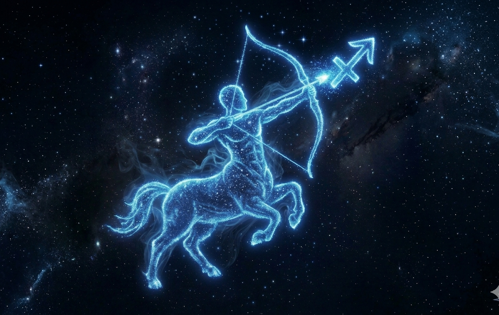

Sagitário

O signo de Sagitário é o nono do zodíaco e está associado à liberdade, ao otimismo e à busca por conhecimento.
Regido pelo planeta Júpiter, Sagitário tem forte ligação com a expansão, as viagens e a filosofia.
Pessoas sagitarianas costumam ser aventureiras, sinceras e cheias de energia, sempre em busca de novas experiências e aprendizados.
Gostam de liberdade e não se prendem facilmente a rotinas. Por outro lado, podem ser impulsivas, exageradas e falar sem pensar.
Sagitário é um signo de elemento fogo, o que reforça seu entusiasmo, alegria e espírito explorador.
Em resumo, sagitarianos são conhecidos por seu otimismo, franqueza e vontade de descobrir o mundo.